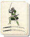

Requires
- Arts:

Enables
- Buildings:

- Arts: 
Effects
- +1 experience for all sword-wielding recruits
Description
The true student of the sword practices daily, until there is no enemy and no weapon. The proper stroke and counterstroke happen without thought: all becomes as one and the warrior simply reacts correctly to every situation. Warriors who go through such rigorous and endless training have their skills improved, and are already experienced in combat before they even reach a battlefield.
Miyamoto Musashi, the author of the Book of Five Rings and a legendary swordsman, devoted his life to his swordsmanship. At 16, he set off on a pilgrimage to discover all he could about the art of combat. He spent most of his life on the road, never settling, and sleeping out in the open regardless of the season. He looked wretched and unkempt; this was something highly unusual in a samurai, and it is said that he never bathed, as entering washing would have left him unarmed and vulnerable. He eventually settled with his adopted son, Iori, but easy comfort did not agree with him and retired to a cave, where he lived until his death. Musashi's book is still influential, and a fascinating glimpse into a now-lost world.